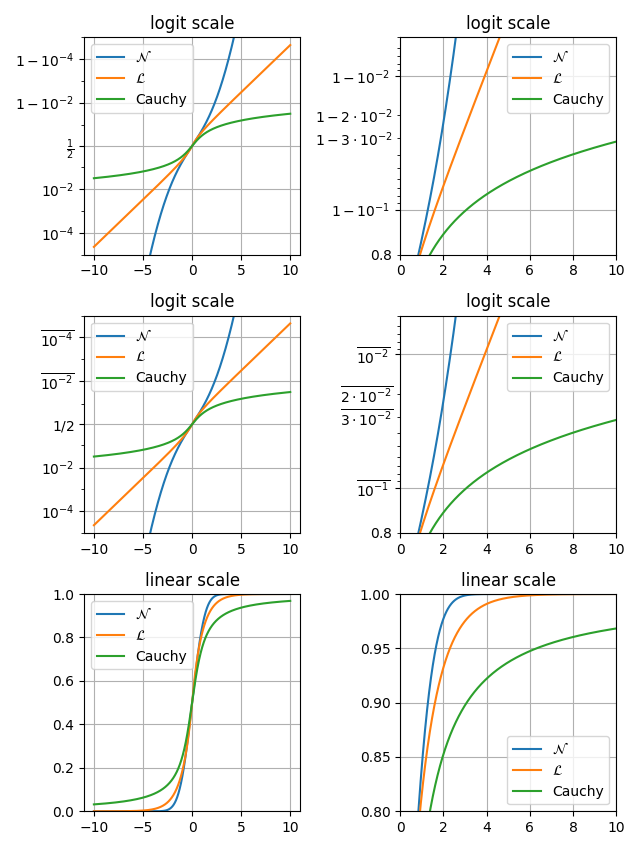

Note
Click here to download the full example code
Logit Demo¶
Examples of plots with logit axes.
import math
import numpy as np
import matplotlib.pyplot as plt
xmax = 10
x = np.linspace(-xmax, xmax, 10000)
cdf_norm = [math.erf(w / np.sqrt(2)) / 2 + 1 / 2 for w in x]
cdf_laplacian = np.where(x < 0, 1 / 2 * np.exp(x), 1 - 1 / 2 * np.exp(-x))
cdf_cauchy = np.arctan(x) / np.pi + 1 / 2
fig, axs = plt.subplots(nrows=3, ncols=2, figsize=(6.4, 8.5))
# Common part, for the example, we will do the same plots on all graphs
for i in range(3):
for j in range(2):
axs[i, j].plot(x, cdf_norm, label=r"$\mathcal{N}$")
axs[i, j].plot(x, cdf_laplacian, label=r"$\mathcal{L}$")
axs[i, j].plot(x, cdf_cauchy, label="Cauchy")
axs[i, j].legend()
axs[i, j].grid()
# First line, logitscale, with standard notation
axs[0, 0].set(title="logit scale")
axs[0, 0].set_yscale("logit")
axs[0, 0].set_ylim(1e-5, 1 - 1e-5)
axs[0, 1].set(title="logit scale")
axs[0, 1].set_yscale("logit")
axs[0, 1].set_xlim(0, xmax)
axs[0, 1].set_ylim(0.8, 1 - 5e-3)
# Second line, logitscale, with survival notation (with `use_overline`), and
# other format display 1/2
axs[1, 0].set(title="logit scale")
axs[1, 0].set_yscale("logit", one_half="1/2", use_overline=True)
axs[1, 0].set_ylim(1e-5, 1 - 1e-5)
axs[1, 1].set(title="logit scale")
axs[1, 1].set_yscale("logit", one_half="1/2", use_overline=True)
axs[1, 1].set_xlim(0, xmax)
axs[1, 1].set_ylim(0.8, 1 - 5e-3)
# Third line, linear scale
axs[2, 0].set(title="linear scale")
axs[2, 0].set_ylim(0, 1)
axs[2, 1].set(title="linear scale")
axs[2, 1].set_xlim(0, xmax)
axs[2, 1].set_ylim(0.8, 1)
fig.tight_layout()
plt.show()
Total running time of the script: ( 0 minutes 1.114 seconds)
Keywords: matplotlib code example, codex, python plot, pyplot Gallery generated by Sphinx-Gallery